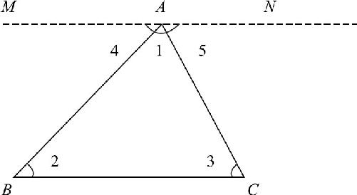
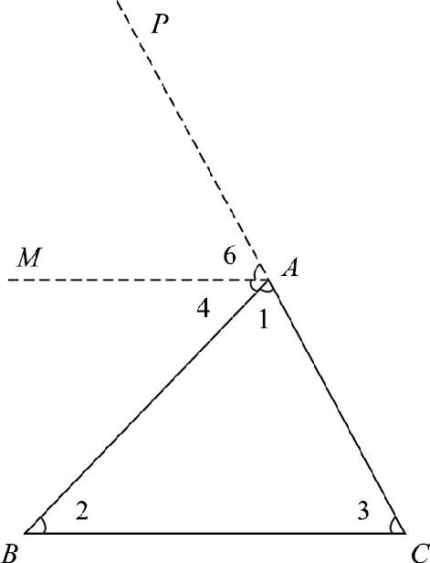
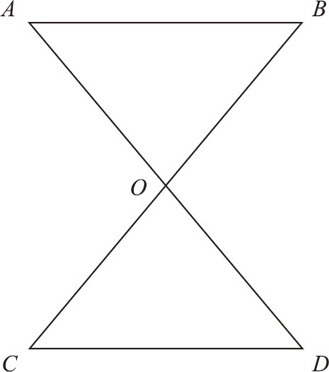

虽然土地的形状千变万化，但是都可以被近似地分割成多个大小形状不等的三角形．因此，我们只要掌握了三角形的性质，平分土地就变得相对容易了．那么，三角形又有哪些性质呢？三角形有三条边和三个角，三角形的内角之和是180°．那么，你有没有思考过背后的原因呢？世界上有那么多大小形状不同的三角形，为什么它们的内角和都是180°呢？当然，我们可以尝试把另外两个角剪下来拼在一起，验证一下三个角能不能拼成一个平角就可以了，这被称作割补法．割补法的缺点也很明显，它只能证明你画的那一个三角形的内角和等于180°，而不能证明世界上所有三角形的内角和等于180°．当你面对的是任意一个三角形的时候，又应该怎么证明呢？其实，学会作辅助线以后就明白了，即使我们不用剪刀，照样可以构造出一个一模一样的角来：
如图5－1所示，在任意一个三角形中，三个内角分别是∠1、∠2和∠3，我们现在要证明的是这三个角相加能够凑成一个平角．应该怎么办呢？前文中曾经提到过：要想让角和角之间相互加减，最好的办法是挨着一个角，把另一个角给作出来．在这个三角形中，我们要想让∠1加上∠2，最好的办法就是挨着∠1作出一个和∠2相等的角来．如何画出和∠2相等的角呢？让我们假设一下，如果我们在一个三角形的顶点上作出了一条线，这条线和三角形左边的夹角∠4等于∠2，那么这两个角和我们新作出的辅助线之间是什么关系呢？它们是不是组成了一个字母“Z”的形状呢？字母“Z”内的这两个角不就是内错角吗？内错角相等，两直线平行，因此我们只要经过三角形的顶点，作一条和底边平行的直线，立刻就可以得到和左边的∠2相等的一个内错角∠4．因为∠4和顶角∠1是挨着的，所以它们自然就可以相加了，按此思路我们继续处理右边的底角∠3，右边的底角∠3已经有一个与之对应的内错角了！由于我们新作的辅助线和底边是平行的，所以三角形右边这条线和辅助线之间的夹角∠5就和∠3是一对内错角．一根与底边平行的辅助线经过顶点以后，左边的∠4等于左边的底角∠2，右边的∠5等于右边的底角∠3，正中间这个角是原来的顶角∠1，这三个角合并起来正好就是一个平角，由此我们知道三角形的内角和等于180°．在这里，因为我们作的这个三角形是任意一个三角形，所以就证明了任意三角形的内角和都是180°．完整的证明过程如下：
如图5－1所示，已知△ABC ，过其顶点A 作直线MN∥BC ．
∵MN∥BC ，
∴∠4＝∠2，∠5＝∠3（两直线平行，内错角相等）．
又∵∠1＋∠4＋∠5＝∠MAN ＝180°，
∴∠1＋∠2＋∠3＝180°（等量代换）．

图5－1
那么，三角形内角和是不是只有这一种证明方法呢？当然不是！接下来我们尝试一种新的方法：过顶点A 作AM 平行于BC ，这时，我们只知道∠4＝∠2，右边的∠3找不到对应相等的角了，怎么办？我们把三角形右边CA 往上延长了（延长CA 至P ），让这条线从顶角这个地方冒出头来．如图5－2所示，就像三角形ABC 长出来了一根天线AP ，那么AP 和AM 的夹角∠6，和三角形右边的底角∠3是什么关系呢？这两个角是不是一对平行线AM 和BC ，被直线PC 截断所形成的呢？而且这两个角是不是都是在平行线左上角呢？所以这两个角就是同位角的关系．这样一来，我们又给右边的∠3找到了一个相等的角∠6．现在，三个角再次凑到一起了，在三角形顶角这个位置上，挨着顶角的∠4和左下角的∠2是内错角关系，所以∠4＝∠2，∠4上面紧邻的∠6又和右边的底角∠3是同位角关系，∠1＋∠4＋∠6仍然可以得到一个平角∠CAP ，因此，这三个角相加仍然是180°．完整证明过程如下：
已知△ABC ，过其顶点A 作直线MA ∥BC ．
∵MA ∥BC ，
∴∠4＝∠2（两直线平行，内错角相等）．
延长CA 至P ，得到
∠6＝∠3（两直线平行，同位角相等）．
又∵∠1＋∠4＋∠6＝∠CAP ＝180°，
∴∠1＋∠2＋∠3＝180°（等量代换）．

图5－2
对于同一个问题，我们为什么要证明两遍呢？因为我要介绍给你三角形的另一个性质：当我们延长了三角形的一条边以后，比如右边的CA ，它就会从顶点冒出头儿来得到射线AP ，此时AP 就和原来三角形的左边AB 形成了一个夹角∠BAP ，由于这个夹角在三角形的外边，所以就叫作三角形的外角．这个外角可以通过一条和底边平行的线AM 分成两部分∠4和∠6，两者又分别等于原来三角形的两个底角∠2和∠3．因此，我们就得到了三角形的外角定理：三角形的任何一个外角，都等于和它不相邻的两个内角和．
下面，我们再研究一个问题：如图5－3所示的一个沙漏形ABCD ，已知沙漏的左边两个角∠C ＝∠A ，求证右边这两个角∠B 和∠D 也相等．

图5－3
这个问题怎么证明呢？题目并没有告诉我们上下两条直线AB 和CD 是平行的，告诉我们的已知条件∠A 和∠C 也不是同位角或内错角的关系，因此我们只能从其他条件入手．根据图示我们发现，沙漏形是两个三角形拼凑起来的，在沙漏的细腰附近，左右两侧的角都是上下两个三角形的外角，沙漏右边的∠BOD 是沙漏上边的三角形的外角，因此就是上面两个角∠A 和∠B 的和，同理，它又是沙漏最底下的两个角∠C 和∠D 的和，而且题目还告诉我们，左边这两个角∠C ＝∠A ，因此，我们就很容易知道右边的两个角相等了．证明过程如下：
∵∠BOD ＝∠A ＋∠B （外角定理），
∴∠B ＝∠BOD －∠A ．
∵∠BOD ＝∠C ＋∠D （外角定理），
∴∠D ＝∠BOD －∠C ．
又∵∠A ＝∠C （已知），
∴∠D ＝∠BOD －∠A ＝∠B ．